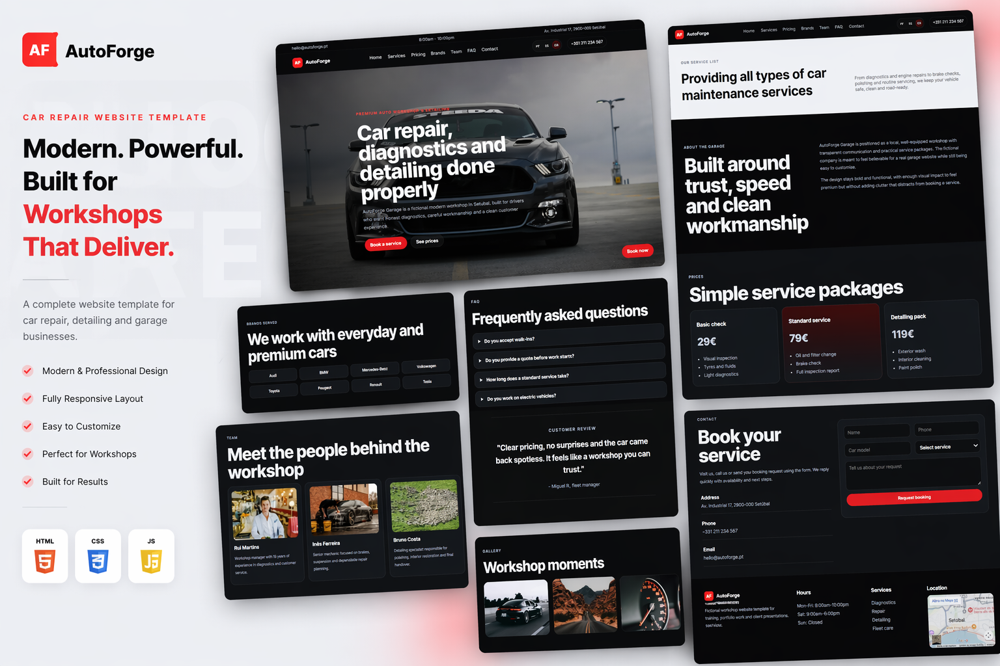

Objetivo
Organizar pedidos de forma clara para equipa e utilizadores finais.
Case Study
Interface desenvolvida para centralizar pedidos de assistencia e melhorar o acompanhamento de cada situacao, reduzindo duvidas e tempos de resposta.

Organizar pedidos de forma clara para equipa e utilizadores finais.
Painel visual, fluxo intuitivo e acesso rapido a historico e estado dos pedidos.